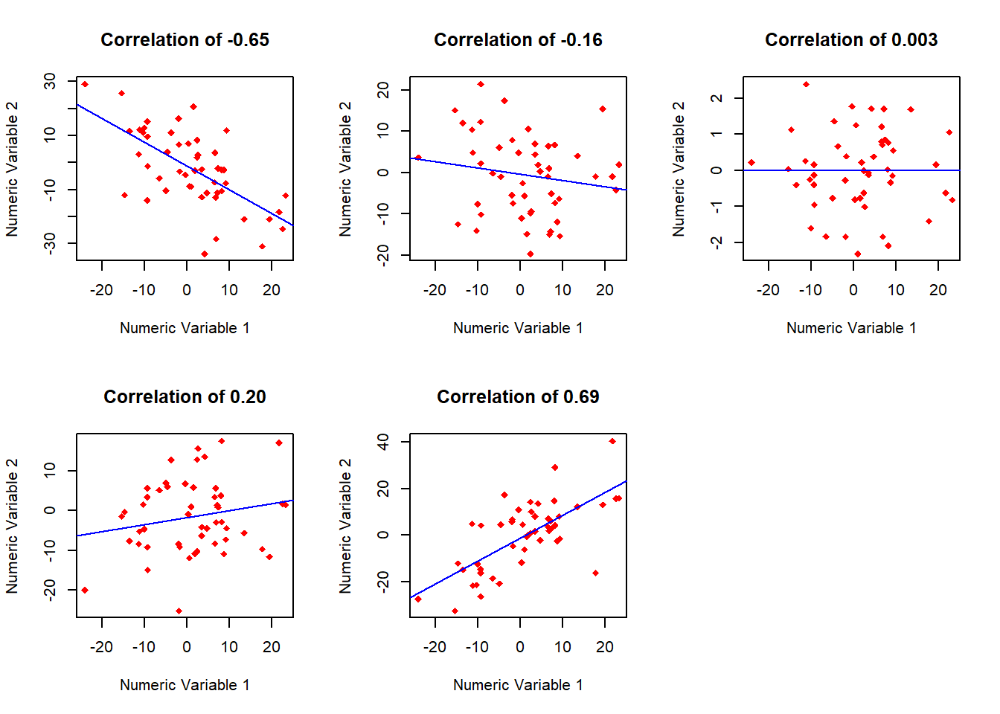
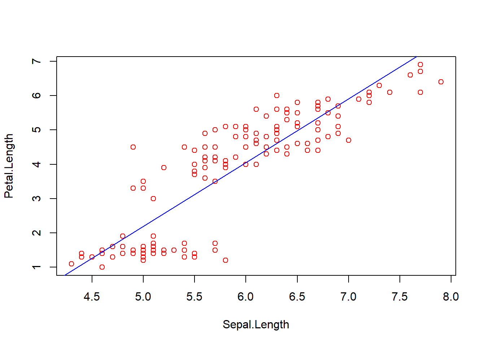
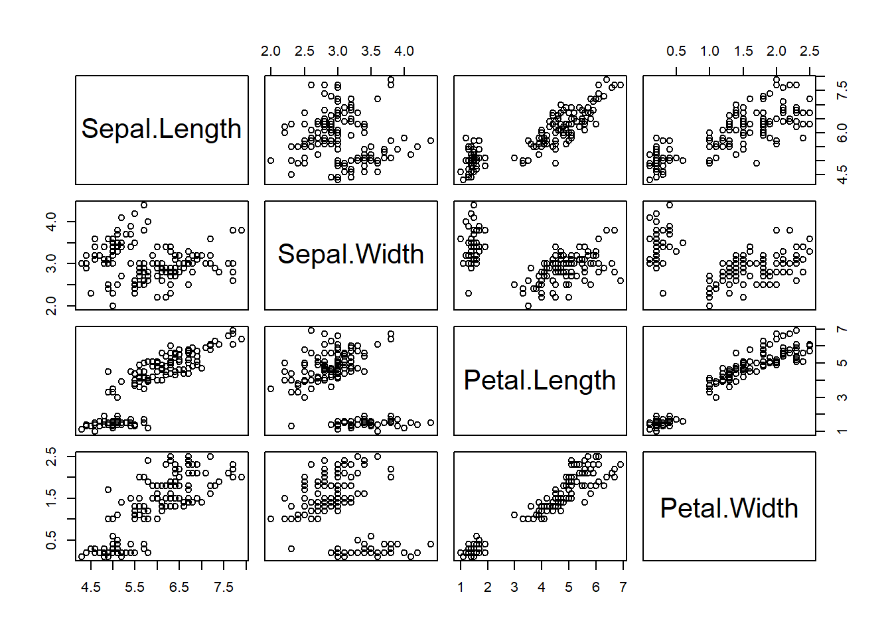
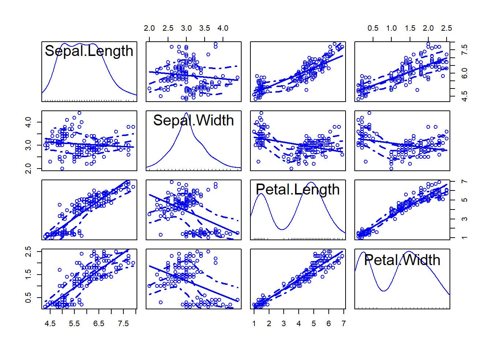
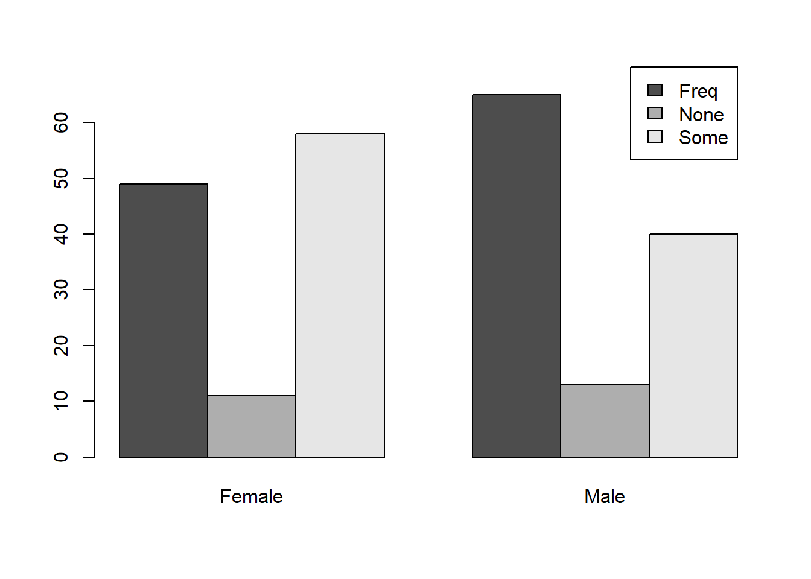
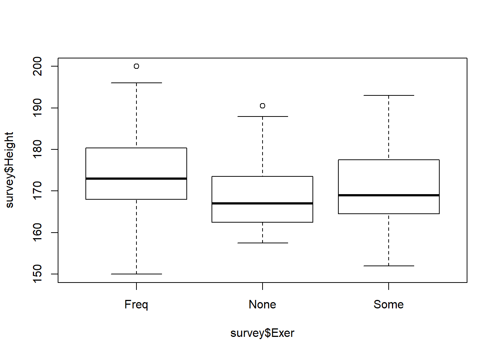
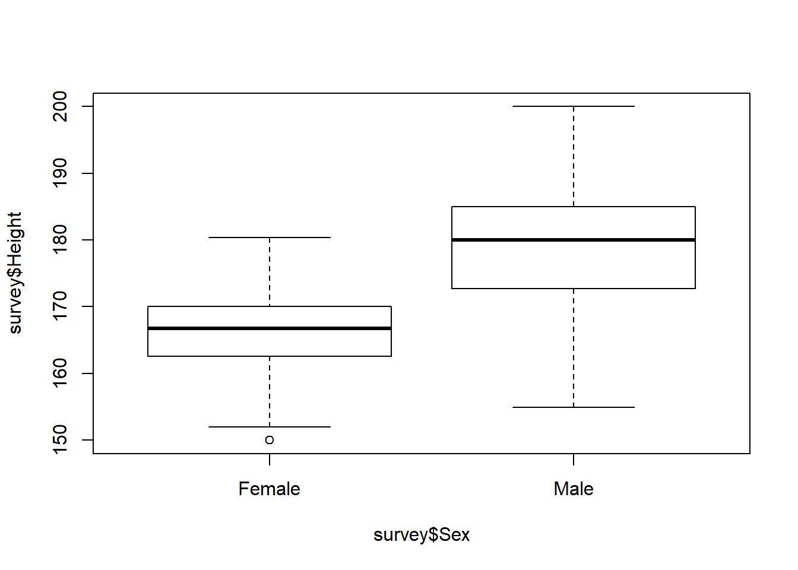

Chapter 7 Relationships between variables
7.1 Between continuous variables: Correlations
7.1.1 Plotting

7.1.2 Correlations between two numeric variables
Assumptions of interval/ratio scaled variables, presence of linear relationships, absence of extreme outliers, and normality of the variables are made when conducting these tests.
plot(iris$Sepal.Length,iris$Petal.Length,col="red",xlab="Sepal.Length",ylab="Petal.Length")
abline(lm(iris$Petal.Length~iris$Sepal.Length),col="blue")
Pearson Correlation coefficient
cor(iris$Sepal.Length,iris$Petal.Length)## [1] 0.8717538Testing whether the observed correlation coefficient is different from 0
cor.test(iris$Sepal.Length,iris$Petal.Length)##
## Pearson's product-moment correlation
##
## data: iris$Sepal.Length and iris$Petal.Length
## t = 21.646, df = 148, p-value < 2.2e-16
## alternative hypothesis: true correlation is not equal to 0
## 95 percent confidence interval:
## 0.8270363 0.9055080
## sample estimates:
## cor
## 0.8717538Testing whether the observed correlation coefficient is greater than 0
cor.test(iris$Sepal.Length,iris$Petal.Length,alternative = "greater")##
## Pearson's product-moment correlation
##
## data: iris$Sepal.Length and iris$Petal.Length
## t = 21.646, df = 148, p-value < 2.2e-16
## alternative hypothesis: true correlation is greater than 0
## 95 percent confidence interval:
## 0.8350748 1.0000000
## sample estimates:
## cor
## 0.87175387.1.3 Paired Samples - comparing two-means
summary(survey[,c(2,3)])## Wr.Hnd NW.Hnd
## Min. :13.00 Min. :12.50
## 1st Qu.:17.50 1st Qu.:17.50
## Median :18.50 Median :18.50
## Mean :18.67 Mean :18.58
## 3rd Qu.:19.80 3rd Qu.:19.73
## Max. :23.20 Max. :23.50
## NA's :1 NA's :1t.test(survey$Wr.Hnd,survey$NW.Hnd,paired = TRUE)##
## Paired t-test
##
## data: survey$Wr.Hnd and survey$NW.Hnd
## t = 2.1268, df = 235, p-value = 0.03448
## alternative hypothesis: true difference in means is not equal to 0
## 95 percent confidence interval:
## 0.006367389 0.166513967
## sample estimates:
## mean of the differences
## 0.086440687.1.4 Relationships between more than two numeric variables
pairs(iris[,1:4])
library(car)
scatterplotMatrix(iris[,1:4])
The correlations matrix and test of significance
cor(iris[,1:4])## Sepal.Length Sepal.Width Petal.Length Petal.Width
## Sepal.Length 1.0000000 -0.1175698 0.8717538 0.8179411
## Sepal.Width -0.1175698 1.0000000 -0.4284401 -0.3661259
## Petal.Length 0.8717538 -0.4284401 1.0000000 0.9628654
## Petal.Width 0.8179411 -0.3661259 0.9628654 1.0000000# Correlations with significance levels
library(Hmisc)
rcorr(as.matrix(iris[,1:4]), type="pearson") # type can be pearson or spearman## Sepal.Length Sepal.Width Petal.Length Petal.Width
## Sepal.Length 1.00 -0.12 0.87 0.82
## Sepal.Width -0.12 1.00 -0.43 -0.37
## Petal.Length 0.87 -0.43 1.00 0.96
## Petal.Width 0.82 -0.37 0.96 1.00
##
## n= 150
##
##
## P
## Sepal.Length Sepal.Width Petal.Length Petal.Width
## Sepal.Length 0.1519 0.0000 0.0000
## Sepal.Width 0.1519 0.0000 0.0000
## Petal.Length 0.0000 0.0000 0.0000
## Petal.Width 0.0000 0.0000 0.00007.2 Relationships between factor variables
Let us revert back to our use of the survey dataset and focus on the Sex and Exervariables. Below, we look at the structure of the dataset and summarize each of the three variables.
str(survey)## 'data.frame': 237 obs. of 12 variables:
## $ Sex : Factor w/ 2 levels "Female","Male": 1 2 2 2 2 1 2 1 2 2 ...
## $ Wr.Hnd: num 18.5 19.5 18 18.8 20 18 17.7 17 20 18.5 ...
## $ NW.Hnd: num 18 20.5 13.3 18.9 20 17.7 17.7 17.3 19.5 18.5 ...
## $ W.Hnd : Factor w/ 2 levels "Left","Right": 2 1 2 2 2 2 2 2 2 2 ...
## $ Fold : Factor w/ 3 levels "L on R","Neither",..: 3 3 1 3 2 1 1 3 3 3 ...
## $ Pulse : int 92 104 87 NA 35 64 83 74 72 90 ...
## $ Clap : Factor w/ 3 levels "Left","Neither",..: 1 1 2 2 3 3 3 3 3 3 ...
## $ Exer : Factor w/ 3 levels "Freq","None",..: 3 2 2 2 3 3 1 1 3 3 ...
## $ Smoke : Factor w/ 4 levels "Heavy","Never",..: 2 4 3 2 2 2 2 2 2 2 ...
## $ Height: num 173 178 NA 160 165 ...
## $ M.I : Factor w/ 2 levels "Imperial","Metric": 2 1 NA 2 2 1 1 2 2 2 ...
## $ Age : num 18.2 17.6 16.9 20.3 23.7 ...summary(survey$Sex)## Female Male NA's
## 118 118 1summary(survey$Exer)## Freq None Some
## 115 24 98A cross-tab (or a cross-tabulation) presents joint-frequencies of two or more variables. For example, if we were interested in finding how many of the 118 Females engaged in different levels of Exercise, we could use a cross-tab to answer that.
crosstab=table(survey$Exer,survey$Sex)
crosstab##
## Female Male
## Freq 49 65
## None 11 13
## Some 58 40We could also plot that data in the form of stacked or dodged bar graphs.
barplot(crosstab,beside=TRUE, legend=levels(unique(survey$Exer)),args.legend=list(
x= 8,y=70))
barplot(crosstab,legend=levels(unique(survey$Exer)),args.legend=list(
x= 1.75,y=150,horiz=TRUE))
If we now wanted to check if the tendency to exercise was independent of the gender, we could use the Chi-square test of independence.
The null hypothesis is that the two variables are independent and the alternate is that they are related.
chisq.test(crosstab)##
## Pearson's Chi-squared test
##
## data: crosstab
## X-squared = 5.7184, df = 2, p-value = 0.05731Interpretation: the p-value of .057 suggests that there is no evidence of the presence of a relationship between Sex and Exercise. Thus, it is likely that the variables are independent of each other.
7.3 Between factor and continuous variables
In such cases, one may be interested in studying how the mean scores of the continuous variable differs across multiple levels of the factor variable
7.3.1 Two levels of a factor level and one continuous variable - t-test
Let us check how the mean height of different genders in the survey data.
aggregate(survey$Height,list(survey$Sex),mean, na.rm=T)## Group.1 x
## 1 Female 165.6867
## 2 Male 178.8260The distribution of Height across the two levels can be studied using a box plot.
plot(survey$Height~survey$Sex)
Although males seem to be taller than females, it is unclear if the difference being observed is statistically significant. In such a case, we could use an independent samples t-test to answer the question.
t.test(survey$Height~survey$Sex, alternative='less', conf.level=.99, var.equal=FALSE)##
## Welch Two Sample t-test
##
## data: survey$Height by survey$Sex
## t = -12.924, df = 192.7, p-value < 2.2e-16
## alternative hypothesis: true difference in means is less than 0
## 99 percent confidence interval:
## -Inf -10.75448
## sample estimates:
## mean in group Female mean in group Male
## 165.6867 178.8260Note that the mean height of females is lower than the mean height of males. Hence the test-statistic is negative. The result suggests that mean height of females is less than the mean height of men. (the p-value is less than .01 and the t-value observed lies in the 99 percent confidence interval.)
7.3.2 More than two levels of a factor variable and one continuous variable.- One-Way ANOVA
Let us check the mean height of people who engage in different levels of Exercising.
aggregate(survey$Height,list(survey$Exer),mean, na.rm=T)## Group.1 x
## 1 Freq 174.6067
## 2 None 169.0280
## 3 Some 170.3969plot(survey$Height~survey$Exer)
Interestingly, we find that those who engage in frequent exercise have a higher mean height than those who engage in some exercise. In a similar vein, those who engage in some exercise seem to have a higher mean height than those who do not engage in any exercise. But, are these differences statistically significant?
Since we have more than two levels of the factor variable, one will have to use an ANOVA (Analysis of Variance).
The Null hypothesis is that the means of all groups is the same and the alternate is that at least one mean is different.
results=aov(survey$Height ~ survey$Exer)
summary(results)## Df Sum Sq Mean Sq F value Pr(>F)
## survey$Exer 2 1076 537.8 5.802 0.00354 **
## Residuals 206 19095 92.7
## ---
## Signif. codes: 0 '***' 0.001 '**' 0.01 '*' 0.05 '.' 0.1 ' ' 1
## 28 observations deleted due to missingnessThe findings suggest that we have evidence that at least one of the three means is different from the others. (The p-value of .00354 indicates significance at the .01 level.) Note that the earlier test does not tell us whether the differences between consecutive means is statistically significant.
We can do a multiple-comparison of means to test that.
TukeyHSD(results,conf.level = .99)## Tukey multiple comparisons of means
## 99% family-wise confidence level
##
## Fit: aov(formula = survey$Height ~ survey$Exer)
##
## $`survey$Exer`
## diff lwr upr p adj
## None-Freq -5.578667 -12.498802 1.34146876 0.0482672
## Some-Freq -4.209762 -8.361843 -0.05768065 0.0088321
## Some-None 1.368905 -5.688276 8.42608588 0.8354672